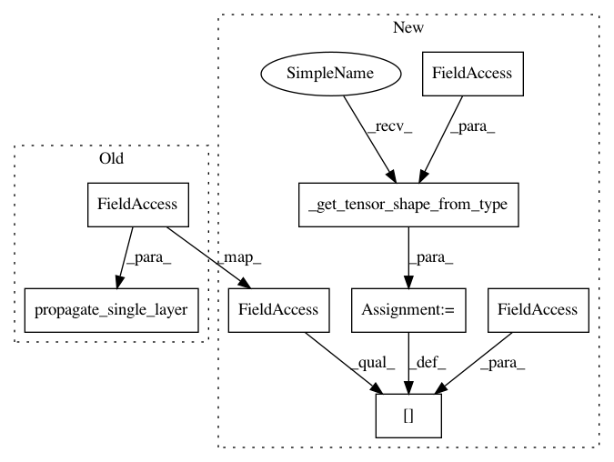

d1e6e624ef891543c5bba32bb0a696d350714693,coremltools/converters/nnssa/coreml/ssa_converter.py,SSAConverter,_convert_pack,#SSAConverter#Any#,882
Before Change
input_names = self._get_input_tensors(node)
layer = self._get_builder().add_stack(
name=node.name, input_names=input_names, output_name=node.name, axis=axis)
shapes.propagate_single_layer(layer, self.tensor_shapes)
def _convert_unpack(self, node):
input_names = self._get_input_tensors(node)
output_names = node.outputs
After Change
name=node.name, input_names=input_names, output_name=node.name, axis=axis)
self.tensor_shapes[node.name] = self._get_tensor_shape_from_type(node.datatype)
def _convert_unpack(self, node):
input_nodes, input_names, input_types = self._get_input_tensors(node)
output_names = [(node.name + "_" + str(i) + "_") for i in range(len(node.datatype.T))]
In pattern: SUPERPATTERN
Frequency: 3
Non-data size: 8
Instances
Project Name: apple/coremltools
Commit Name: d1e6e624ef891543c5bba32bb0a696d350714693
Time: 2019-08-20
Author: smq@apple.com
File Name: coremltools/converters/nnssa/coreml/ssa_converter.py
Class Name: SSAConverter
Method Name: _convert_pack
Project Name: apple/coremltools
Commit Name: d1e6e624ef891543c5bba32bb0a696d350714693
Time: 2019-08-20
Author: smq@apple.com
File Name: coremltools/converters/nnssa/coreml/ssa_converter.py
Class Name: SSAConverter
Method Name: _convert_gather_nd
Project Name: apple/coremltools
Commit Name: d1e6e624ef891543c5bba32bb0a696d350714693
Time: 2019-08-20
Author: smq@apple.com
File Name: coremltools/converters/nnssa/coreml/ssa_converter.py
Class Name: SSAConverter
Method Name: _convert_pool